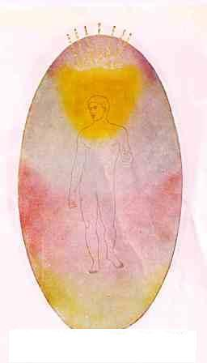
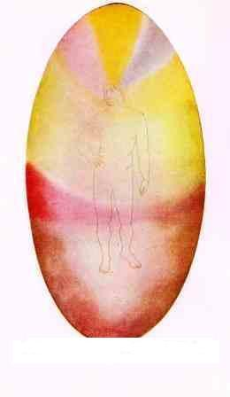
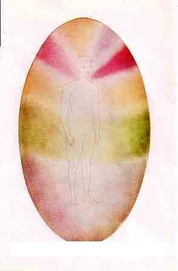

Mental Body
 |
The mental body is composed of only four types of essence, whereas the astral [emotion/desire] and the physical are formed of seven types. 11 The mental body is built of particles of the four lower sub-divisions of the mental world, ie., of mental matter which corresponds to the four lower sub-divisions of astral matter, and to solid, liquid, gaseous and etheric matter of the physical plane. The three higher grades of mental matter are used to build the Causal, or Higher Mental [which is expanded upon in Spiritual body page]. The mental body is the vehicle of the Thinker, who himself resides in the Causal body. But while the mental body is intended eventually to be the vehicle of consciousness on the lower mental plane, it also works on and through the astral and physical bodies in all manifestations that are usually called the "mind" in ordinary waking consciousness. The shape of the mental body is ovoid, [as are the astral and causal]. The matter of the mental body, however, is not evenly distributed throughout the egg. In the midst of the ovoid is the physical body, which strongly attracts astral matter: and in its turn the astral matter strongly attracts mental matter. Consequently, by far the greater part of the matter of both astral and mental bodies is gathered within the physical frame. To 'clairvoyant' sight, therefore, the mental body appears as built of dense mist, of the shape of the physical body, and surrounded by an ovoid of much finer mist. The portion of the mental body which projects beyond the periphery of the physical body forms the mental 'aura'. The size of both astral and mental bodies is the same as that of the causal body, or more accurately, of the section of the causal body on the lower planes. Thus, unlike the physical body, which has remained substantially the same size [for aeons], the mental body grows in size as the man himself develops.14 |
 |
When a man thinks of a concrete object - a book, house,
landscape, etc - he builds a tiny image of the object in the matter of
his mental body. This image floats in the upper part of that body,
usually in front of the face of the man and about at the level of the
eyes. It remains there as long as the man is comtemplating the object,
and usually for a little time afterwards, the length of life depending
upon the intensity and the clearness of the thought. The form is quite
objective and can be seen by another person possessed of mental sight.
If a man thinks of another person he creates a tiny portrait in just the
same way. 6
From a study of the colours and striations of a man's mental body, the 'clairvoyant' can perceive his character and the progress he has made in his life. The mental body is more or less refined in its constituents, according to the stage of intellectual development at which the man has arrived. it is an object of great beauty, the delicacy and rapid motion of its particles giving it an aspect of living, iridescent light, and this beauty becomes an extraordinarily radiant and entrancing loveliness as the intellect becomes mor highly evolved and is employed chiefly on pure and sublime topics. |
 |
The principles which underlie the production of all thought-emotion forms are:- 1. Colour is determined by the quality of the thought or emotion. 2. Form is determined by the nature of the thought or emotion. 3. Clearness of Outline is determined by the definiteness of the thought or emotion. The life period of a thought-form depends upon (1) its initial intensity; (2) the nutriment afterwards supplied to it by a repetition of the thought, either by the generator or by others. Its life may be continually reinforced by this repetition, a thought which is brooded over acquiring great stability of form. So again thought-forms of similar character are attracted to and mutually strengthen each other, making a form of great energy and intensity. Furthermore, such a thought-form appears to possess instinctive desire to prolong its life and will react on its creator, tending to evoke from him renewal of the feeling that created it. It will react in a similar, though not so perfect manner on any others with whom it may come into contact. The colours in which thought-forms express themselves are identical with the colours in the [emotional] aura. The brilliance and depth of the colours are usually a measure of the strength and the activity of the feeling. 6 |